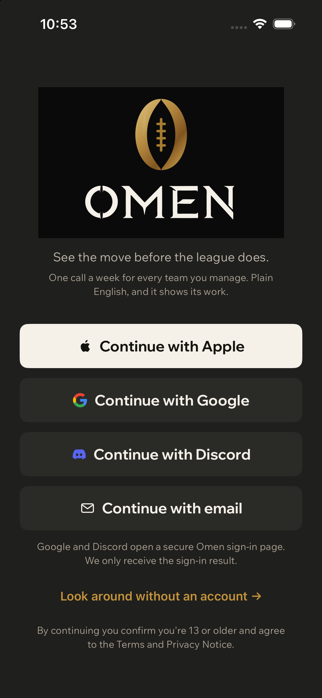
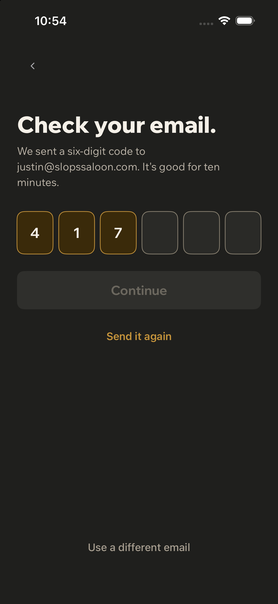
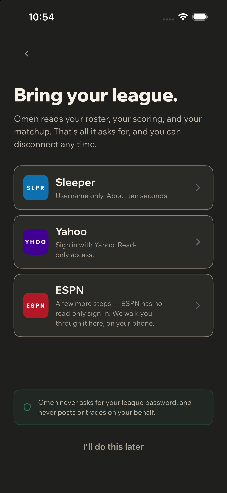
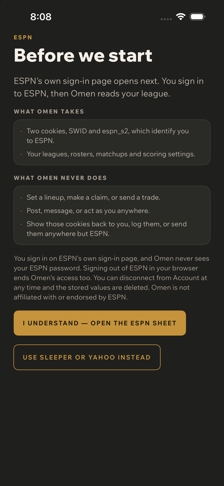
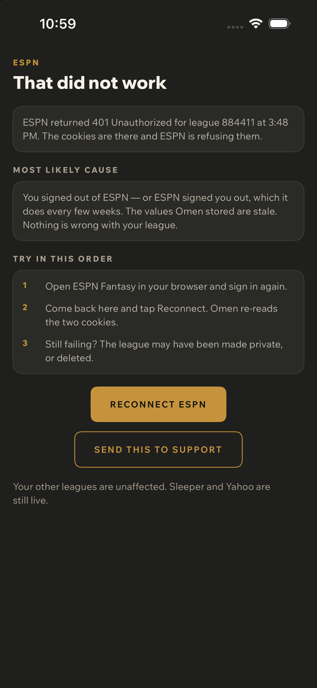
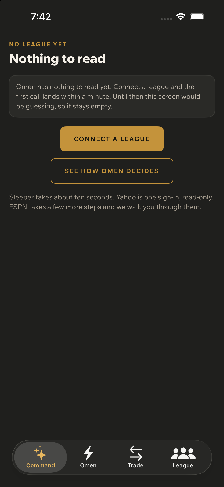
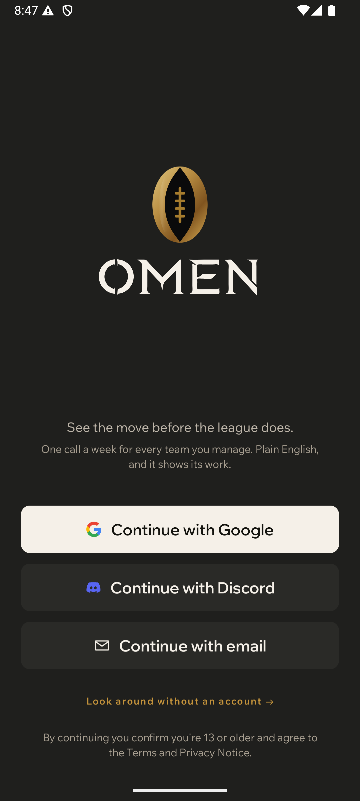
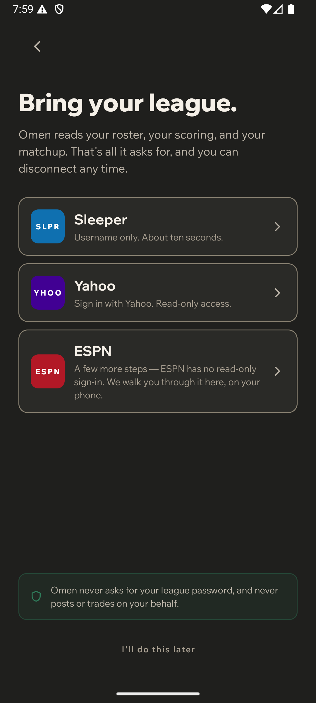
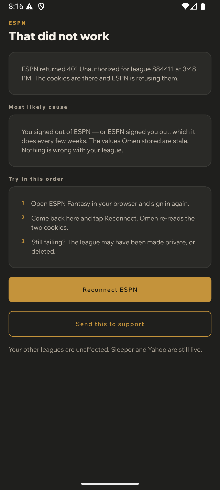
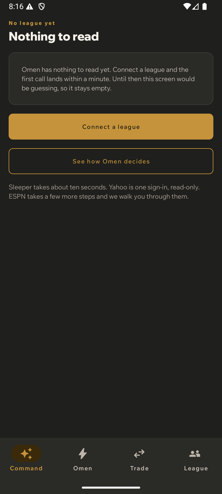

Sign in, connect a league. Six artboards, both platforms, dark. The journey has no
capability profile, so per screen-journeys-v1.md its degraded pass is the
provider failure path — and that is the only confirmed beta failure on record.
In the order a user meets it. EmailCode needed no rebuild: its OTP
field already normalizes and takes the first six digits, so a pasted code fills every box.




W1-GATE required when the terms answer came back No.

Same strings, same order. Two frames are not yet captured on Android and are listed under gaps rather than quietly omitted.




It proves composition, sequence and tone. It is a storyboard, not a flow test.
Interaction is covered separately by J1InteractionUITests — six tests asserting every
control exists, is hittable and clears 44pt, and that a real tap leaves the app running. Those
tests found two false alarms in their own first draft and one CGFloat rounding artifact; none was
a product defect, and all three are recorded in the test file.
1. OmenConnectFailedScreen is still unreachable in production. It cannot be
wired honestly: ConnectFailure is a plain enum with no payload, so there is no status
code, league id or timestamp to show, and inventing a 401 would be exactly the false claim the
screen exists to prevent. It needs those fields on the failure model first.
2. Android is missing the EmailCode and ESPN-consent captures. Both screens exist; the
scenarios do not.
3. The brass sheen is absent from the Android lockup — an elliptical radial gradient Android
vector drawables cannot express. Documented in the drawable.